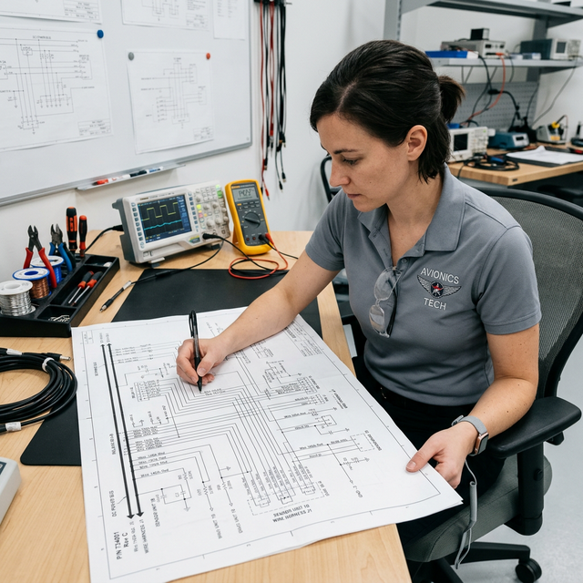

Series/parallel circuit behavior
Module Objectives
- Contrast the behavior of current and voltage in a series circuit versus a parallel circuit.
- Calculate total resistance for simple series and parallel branches.
- Explain why aircraft electrical distribution systems heavily utilize parallel wiring architecture.
Why Does This Matter?

A Piper's three navigation lights are all wired across the same 28VDC lighting bus. During pre-flight, the left wingtip bulb burns out. Do the right wingtip and tail lights go dark too? No — because they are wired in parallel, each light enjoys its own independent path to ground. Understanding series versus parallel behavior is the secret to reading schematics and isolating faults quickly.
What You Need To Know
Series Circuits (The Single Path)
In a series circuit, components are connected end-to-end like links in a chain. There is only one path for the electrons to take.
Rules for series circuits:
- Current is exactly the same through every component.
- Total resistance is the simple sum of all resistances: Rt = R1 + R2 + R3.
- Voltage divides across each component in proportion to its resistance.
- The Failure Rule: If one component opens (fails, breaks, or blows), the entire circuit stops functioning instantly — no current flows anywhere.
Parallel Circuits (The Independent Paths)
In a parallel circuit, components are connected across the same two common points (a supply bus and a ground), providing multiple independent paths for current.
Rules for parallel circuits:
- Voltage is exactly the same across every parallel branch.
- Total current is the sum of all individual branch currents: It = I1 + I2 + I3.
- Total resistance is calculated by the reciprocal formula: 1/Rt = 1/R1 + 1/R2 + 1/R3.
- The Resistance Rule: Total resistance is ALWAYS less than the smallest individual branch resistor. Adding more parallel branches decreases total resistance and increases total current demand from the source.
- The Failure Rule: If one branch opens, the remaining branches continue to operate at full voltage completely unaffected.
Aircraft Architecture (Why it matters)
Aircraft distribution systems are almost entirely parallel. The Nav radio, the GPS, and the transponder all connect to the Avionics Bus in parallel. They all receive 28V. If the transponder shorts out and trips its breaker (opening its branch), the Nav radio and GPS are unaffected. This fault-isolation property is why parallel wiring is critical to flight safety.
System Visualization
graph TD
A[28V Avionics Bus] -->|Parallel Branch| B(Nav 1 Radio)
A -->|Parallel Branch| C(Transponder)
A -->|Parallel Branch| D(Audio Panel)
B --> E[Ground Return]
C --> E
D --> E
C -.->|Transponder Shorts and Opens| F[Transponder Loses Power]
F -.->|Because Parallel| G[Nav 1 and Audio Panel Continue Operating]
style E fill:#1e40af,stroke:#1e3a8a,stroke-width:2px,color:#fff
style G fill:#166534,stroke:#14532d,stroke-width:2px,color:#fff
On The Job
When troubleshooting, ask yourself: "Are these components in series or parallel?" If one instrument is dead but the cluster next to it is fine, they are wired in parallel, and the fault is isolated to that specific branch. If an entire cluster of instruments is dead, trace back to a common series element — like a shared ground block, a master breaker, or a bus relay.
Reference Terms
Series resistance formula
In a series circuit, total resistance equals the sum of all individual resistances: Rt = R1 + R2 + R3. Because current has only one path, every resistor adds to the total opposition.
Parallel resistance (10k, 1k, 500Ω)
Using 1/Rt = 1/10000 + 1/1000 + 1/500 = 0.0001 + 0.001 + 0.002 = 0.0021 → Rt = 1/0.0021 ≈ 476 ohms. The result is always less than the smallest branch (500 ohms).
Parallel circuit total current
In a parallel circuit, total current from the source equals the sum of all individual branch currents: It = I1 + I2 + I3. Each branch draws independently, and the source must supply all of them.
Parallel resistance reduction
Adding resistors in parallel always reduces total circuit resistance because each new branch provides an additional current path. Total parallel resistance is always less than the smallest individual resistor.
Parallel circuit fault isolation
In a parallel circuit, each load has its own independent path to the power source. If one branch opens (bulb burns out), the remaining branches continue to receive full voltage and remain operational.
Series Circuit
Components wired sequentially; current is identical everywhere; one physical break disables the entire system.
Parallel Circuit
Components wired across a shared supply; voltage is identical everywhere; one break does not affect other branches.
Reciprocal Formula
(1/Rt = 1/R1 + 1/R2...) The mathematical method for calculating total parallel resistance.
Assessment Check
Aircraft use parallel wiring because branches are independent and fault-isolated; adding loads in parallel increases current but keeps voltage identical across all devices. --- ---